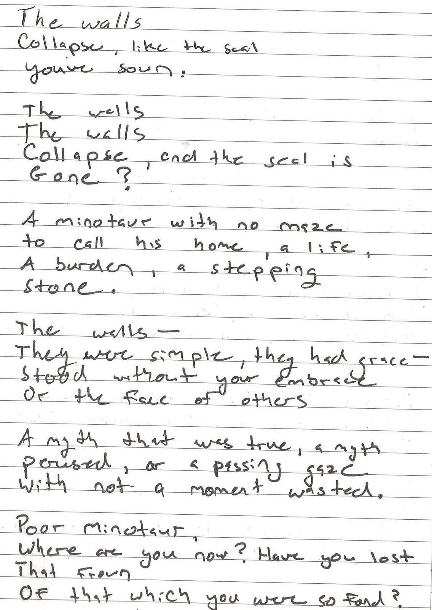
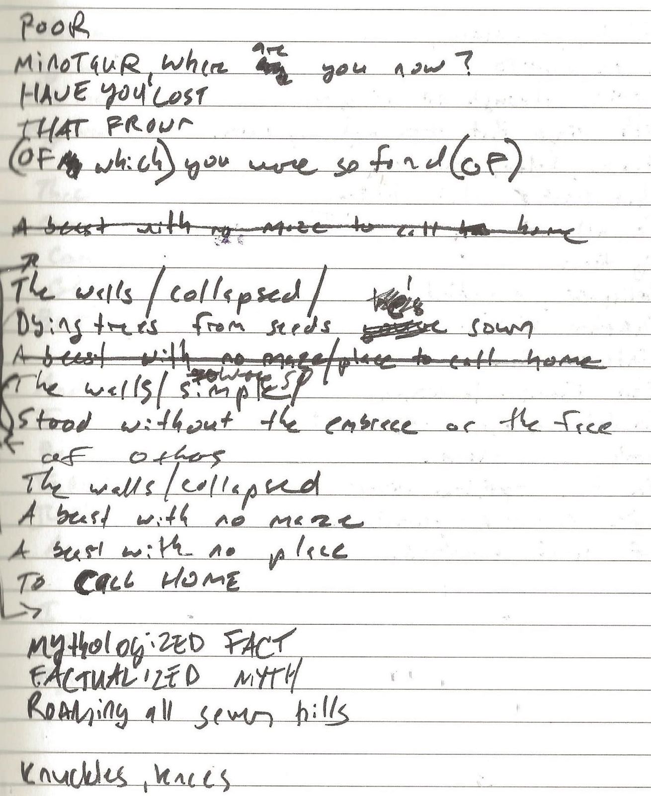

First-release review packet
p001 and its selected version are derived candidates. No release classification, batch evidence, or author clearance has been invented. This whole packet contains withheld material and must stay private.
Open the bounded p001 reader preview · Exact checks and output inventory · Finite author-review queue · Proposed whitelist diff (unapplied)
Current first-release candidates, in recorded page order
| Candidate | First page | Reviewed lines | Pool | Clearance |
|---|---|---|---|---|
| p001 | diary1 | 38/38 | unsorted | Pending |
| p002 | diary2 | 0/14 | unsorted | Pending |
| p003 | diary2a | 0/16 | unsorted | Pending |
| p004 | diary3 | 0/20 | unsorted | Pending |
The full queue preserves source identifiers and page sequence. The separate 100-slot tracker assigns no publication numbers or dates. Weekly cadence begins only on an author-confirmed date after the gates are met.
Decisions needed for this candidate
- Confirm p001 for Series and choose p001-diary1-0 or another explicitly reviewed version. V[1] contains 16 corrected lines and shares a scan with p126.
- Confirm the documented filed/registered workflow and supply the actual batch/deposit/evidence record before release. A database status is not filing evidence.
- Review this exact preview, the downloadable font metadata, title and info-panel wording; confirm any permitted exposure.
- Confirm the derived as-posted numbering and around-the-100 participation defaults when relevant. Select a first-post date only after clearance; past dates are historical.
- Confirm Site versus social recording semantics before automation consumes publication flags.
Technical checks for the bounded preview
| Check | Result |
|---|---|
| index.html has <meta name="robots" content="noindex"> (or a stricter robots tag that includes noindex) | PASS |
| index.html title element is exactly versforms | PASS |
| index.html uses the font family ajp-scribbles | PASS |
| no output file, decoded data URI or decoded font table names the other project (any letter case, ASCII / UTF-16) | PASS |
| _headers sets X-Robots-Tag: noindex for /* | PASS |
| data/j.json has no prov.repo, prov.commit, prov.path | PASS |
| data/j.json lists exactly the expected pieces | PASS |
| every image the data asks for is in the output | PASS |
| no line of an unpublished block appears in the output | PASS |
| exact file whitelist, including images, spreads and plates | PASS |
| no catalogued withheld block visible in any included image | PASS |
| atlas bytes reconstruct from only declared page regions | PASS |
Alternate-version image exposure
Adding the p001 version on diary62a also copies the page's remaining writing: diary62a block 3, diary62a block 4. Those blocks belong to p126 in the preserved catalog. Its release pool is unsorted. The shared-scan flag provides no clearance.


Remedies for the author's choice: retain diary1 only; ask T02 for a reviewable derivative excluding p126 in every image tier and atlas (then recheck); or defer this version. Releasing the neighbour would require its own complete clearance. A CSS mask leaves the original bytes downloadable and is not a remedy.
Review queue
802 finite records with stable source locators: uncertainty, line reviews, version choices, possible pairs, quotation/echo checks, flagged page visibility and pool classification. Categories describe pending work, not editorial judgments.
Scope
The preview reuses the existing reader and PR #101 builder. No source scan, transcript, studio record, public whitelist, account or deployment was changed. noindex is retained; it is an indexing directive, not access control.